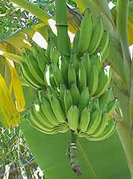

<!--
  Generated template for the ContentPage page.

  See http://ionicframework.com/docs/components/#navigation for more info on
  Ionic pages and navigation.
-->
<ion-header>

  <ion-navbar>
    <ion-title>Bem-Vindo Ao Natureza Compartilhada!</ion-title>
  </ion-navbar>

</ion-header>


<ion-content padding>
  <div class="top">
      <ion-searchbar></ion-searchbar>
      <button ion-button (click)="irParaNewContent()">Anunciar</button>  
  </div>
  <ion-card (click)="irParaItem()">
    
    <ion-card-content>
      <ion-card-title>
        Banana
        </ion-card-title>
      <p>
        Nome do Usuário
      </p>  
      <p>
        Preço
      </p>
      <p>
        Localização
      </p>
    </ion-card-content>
  </ion-card>
  <ion-card>
    
    <ion-card-content>
      <ion-card-title>
        Banana
        </ion-card-title>
      <p>
        NOME DO USUARIO
      </p>
      <p>
        ONDE
      </p>
      <p>
        PRECO
      </p>
      <p>
        INFORMACAO
      </p>
    </ion-card-content>
  </ion-card>
</ion-content>
